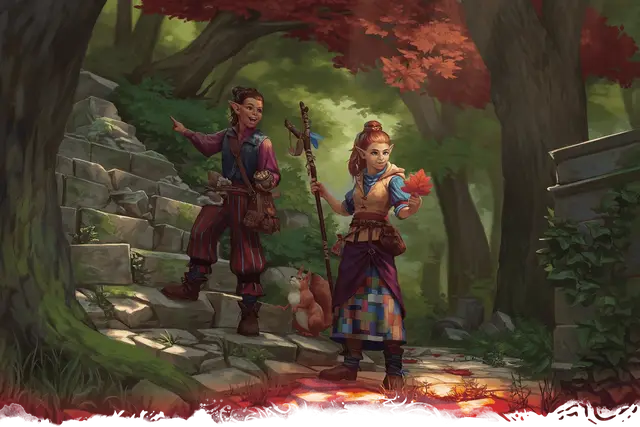

Кендер
Kender

Создание вашего персонажа
Если вы создаете персонажа кендера, следуйте этим дополнительным правилам при создании персонажа.
Увеличение характеристик
При определении значений характеристик вашего персонажа увеличьте одну из характеристик на 2, а другую — на 1, или увеличьте три различные характеристики на 1. Следуйте этому правилу независимо от метода, который вы используете для определения характеристик, бросаете ли вы кости или настраиваете значения.
Раздел «Быстрое создание» в выбранном вами классе даёт рекомендации по тому, какие характеристики увеличить. Вы вольны следовать этим советам или игнорировать их. Какие бы значения вы не решили увеличить, значение ни одной характеристики не может превышать 20.
Языки
Ваш персонаж может говорить, читать и писать на Общем и ещё на одном языке, который вы и Мастер сочтёте подходящим для персонажа. «Книга игрока» содержит список распространенных языков на выбор. Мастер может свободно добавлять или удалять языки из этого списка для нужд кампании.
Вид существа
У каждого существа в D&D, включая каждого персонажа игрока, в правилах есть специальный тег, определяющий вид существа. Большинство персонажей игроков, включая кендеров, являются гуманоидами. Для видов не существует конкретных правил, но некоторые элементы игры различны для существ разных видов. Например, в тексте заклинания лечение ран [cure wounds] указано, что оно не действует на конструктов.
Продолжительность жизни
Типичная продолжительность жизни персонажей игроков в мультивселенной D&D составляет около века, если персонаж не умрёт насильственной смертью в приключениях.
Рост и вес
Персонажи игроков, вне зависимости от расы, обычно имеют примерно тот же рост и вес, как люди в реальном мире. Если вы хотите определить рост или вес персонажа случайным образом, обратитесь к таблице «Случайный рост и вес» в «Книге игрока», и выберите строку в таблице, наилучшим образом описывающую ваше представление о персонаже.
Во времена мифического происхождения Кринна, Реоркс, бог ремёсел, наслаждался эпохой неограниченного творчества. Многие народы возникли из его божественной кузницы, но не все среди них остались такими, какими их создал бог. Под действием безудержной магии группа гномов преобразилась и одарилась почти сверхъестественным любопытством и бесстрашием. Это были первые кендеры.
Родом из мира Кринн, кендеры - это миниатюрные гуманоиды, похожие на людей с заостренными ушами и разнообразной внешностью. Кендеры обладают сверхъестественным любопытством, которое толкает их на приключения. Из-за этой любознательности многие кендеры проваливаются через порталы в другие планы и миры.
Кендеры иногда собирают внушительные коллекции редкостей. Некоторые могут собирать мирские безделушки или реликвии из магических мест, в то время как другие могут стать профессиональными ворами.
Особенности Кендеров
Вы обладаете следующими особенностями.
Вид существа. Вы — Гуманоид.
Размер. Ваш размер — Маленький.
Скорость. Ваша базовая скорость ходьбы — 30 футов.
Бесстрашие. Вы совершаете с преимуществом спасброски, чтобы избежать или окончить на себе состояние «испуганный». Когда вы проваливаете спасбросок, чтобы избежать или окончить на себе состояние «испуганный», вы можете вместо этого сделать спасбросок успешным. Преуспев в спасброске таким образом, вы не можете сделать это повторно, пока не окончите продолжительный отдых.
Любопытство кендеров. Благодаря мистическому происхождению вашего народа, вы владеете одним из следующих навыков на ваш выбор: Проницательность, Расследование, Ловкость рук, Скрытность или Выживание.
Насмешка. Вы обладаете необыкновенной способностью выводить существ из себя. Бонусным действием вы можете произнести ряд провокационных слов в адрес существа в пределах 60 футов от вас, которое может слышать и понимать вас. Цель должна преуспеть в спасброске Мудрости, иначе она будет совершать броски атаки с помехой против других целей, кроме вас, до начала вашего следующего хода. Сл спасброска = 8 + бонус мастерства + модификатор Интеллекта, Мудрости или Харизмы (определите при выборе этой расы).
Вы можете использовать это бонусное действие количество раз, равное вашему бонусу мастерства. Вы восстанавливаете все потраченные использования после окончания продолжительного отдыха.